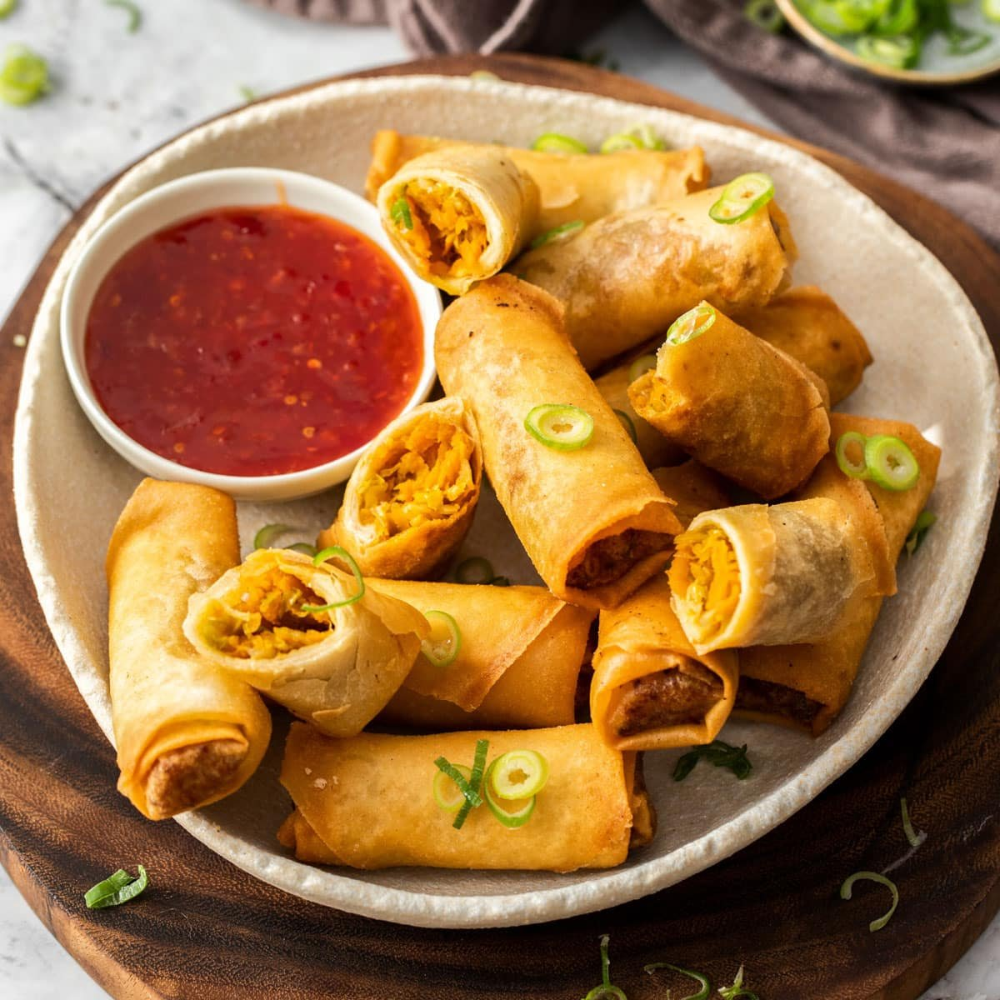

Vegetarian Section

| Stir-Fried Vegetables | Vegetable Spring Rolls | Vegetable Lo Mein | Tofu and Vegetable Stir-Fry |
| Fresh, colorful vegetables such as bell peppers, broccoli, carrots, and snap peas, quickly cooked in a wok with aromatic garlic, ginger, and soy sauce, resulting in a vibrant and flavorful dish that's both nutritious and satisfying. | Crispy, golden rolls filled with a savory mixture of shredded cabbage, carrots, mushrooms, and bean sprouts, seasoned with fragrant herbs and spices, then deep-fried until perfectly crunchy on the outside and tender on the inside. | Soft noodles stir-fried with an assortment of fresh vegetables such as bok choy, bell peppers, and bean sprouts, seasoned with a savory sauce made from soy sauce, garlic, and ginger, resulting in a comforting and flavorful noodle dish that's perfect for any occasion. | Cubes of tofu marinated in a savory sauce, stir-fried with an assortment of colorful vegetables such as bell peppers, onions, and snow peas, creating a protein-packed and nutrient-rich dish that's both hearty and delicious. |
 |
 |  |
 |